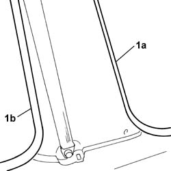
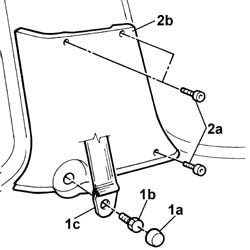

7040H36 central trim lower element - r r
- Path
- Procedures > 70 FITTINGS > 7040 BODYSHELL INTERIOR TRIMS AND FITTINGS > 7040H roof panel lining > 7040H36 central trim lower element - r r
- Kind
- repair procedure (removal / refitting; the operation number is the code)
- Applies to
- all engines; all production periods
- Interactive page
- https://sloeber94.github.io/elrnDB-fDbl/en/#/2585148
Applies to: all engines; all production periods; only with equipment: Doblò trim level
 Removing
Removing
 Refitting
Refitting1. Remove the trim for the front side door (1a) and the sliding rear door (1b).

Applies to: all engines; all production periods; only with equipment: Doblò trim level
1. Remove the cap (1a), undo the fixing bolt (1b) and place the seat belt (1c) at the side.
2. Undo the bolts (2a) and remove the trim (2b).

Applies to: all engines; all production periods; only with equipment: Doblò trim level
Refitting
RemovingFit the lower trim and secure it using the bolts.
Position the seat belt and tighten the lower bolt fixing it to the pillar to torque.
 | Fastening | Component | Ø | Value (daNm) |
|---|---|---|---|---|
- | Bolt | FRONT SEAT BELT | M7/16'' | (lower) 4 |
Fit the cap and reposition the seal for the front side door and the sliding rear door.